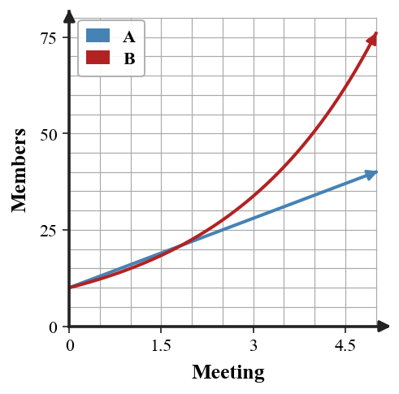

Function Families
Mathematical idea: Function families have repeated features that appear across different representations.
Today you will compare linear, quadratic, exponential, and absolute value patterns. You will use differences, ratios, graph shapes, and equation structure as evidence instead of relying only on appearance.
Learning Target
Learning Target: Students will recognize common function families from graphs, tables, equations, and contexts.
I can statements
- I can design examples of linear, quadratic, exponential, and absolute value relationships using more than one representation.
- I can extend patterns in tables, graphs, equations, and contexts to work with common function families.
- I can critique a proposed function family choice using evidence from rate of change, shape, or equation structure.
What's To Come
This is a long-range preview for future lessons. Do not solve it today. Instead, annotate it individually. Circle anything familiar, underline symbols or directions that seem important, and write notes about what information you think will be needed later.
As you annotate, ask yourself: What parts (words, symbols, graphs) do you KNOW? What parts look FAMILIAR? What parts look like jibberish?
A school wants to predict club membership for the next four meetings. Approach A uses a constant increase of $6$ students each meeting from $18$. Approach B multiplies by $1.25$ each meeting from $18$. Recommend one approach for meetings $1$ through $4$ if room capacity is $60$. Support your recommendation with a table and family evidence.
Intro
Directions
Read the introduction aloud with a partner or in a small group. As you read, annotate the text by highlighting important ideas, circling key vocabulary, and writing short notes about connections, questions, or predictions in the margins.
A function family is a group of relationships with similar patterns. Linear, quadratic, exponential, and absolute value relationships each have features that can appear in tables, graphs, equations, and contexts.
A linear pattern has a constant difference when inputs increase by the same amount. A quadratic pattern often has constant second differences. An exponential pattern has a constant multiplier.
Graphs also show family features. Linear graphs are straight, quadratic graphs curve like a U, exponential graphs grow or decay by multiplication, and absolute value graphs form a V shape.
Equation structure gives another kind of evidence. Terms like $x^2$, repeated multiplication, or absolute value bars can point toward a family, but values should still be checked.
A strong family choice uses evidence from more than one representation. A graph that looks curved may be misleading if the table or context tells a different story.
Stop and Discuss
- What are four function families named in this lesson?
- What table evidence can suggest an exponential pattern?
- Why should a family choice use more than graph shape alone?
When inputs increase by 1, look for repeated differences or repeated ratios in the outputs.
| Family | Sample outputs | Evidence |
|---|---|---|
| Linear | 4, 7, 10, 13 | add 3 each time |
| Quadratic | 1, 4, 9, 16 | differences 3, 5, 7 |
| Exponential | 3, 6, 12, 24 | multiply by 2 each time |
Context: Equal additions suggest steady change; repeated multiplication suggests growth by a factor.
Example 1: Identify a Family from Multiplication
A table has outputs $5,10,20,40$ as inputs increase by 1.
- Decide which family is most likely: linear, quadratic, exponential, or absolute value.
- Name the pattern in the outputs.
- Explain why this evidence supports your choice.
You Try It 1: Identify Another Multiplication Pattern
A table has outputs $2,6,18,54$ as inputs increase by 1.
- Decide which family is most likely: linear, quadratic, exponential, or absolute value.
- Name the pattern in the outputs.
- Explain why this evidence supports your choice.
Stop and Discuss
- What evidence is stronger than simply saying the outputs go up?
Graph shape is useful, but it should be paired with equation or table evidence.

| Equation structure | Likely family |
|---|---|
| $y=2x+5$ | linear |
| $y=x^2-4$ | quadratic |
| $y=3(2^x)$ | exponential |
| $y=|x-1|+2$ | absolute value |
Context: The family name should match the pattern, not just the most familiar-looking graph.
Example 2: Use Differences to Choose a Family
Use the table to identify the likely family. Support your choice with a pattern in the outputs.
| $x$ | 0 | 1 | 2 | 3 | 4 |
|---|---|---|---|---|---|
| $y$ | 1 | 4 | 9 | 16 | 25 |
- Find the first differences.
- Look for a second-difference pattern.
- Choose a likely family and justify it.
You Try It 2: Use Differences Again
Use the table to identify the likely family. Support your choice with a pattern in the outputs.
| $x$ | 0 | 1 | 2 | 3 | 4 |
|---|---|---|---|---|---|
| $y$ | 3 | 6 | 11 | 18 | 27 |
- Find the first differences.
- Look for a second-difference pattern.
- Choose a likely family and justify it.
Stop and Discuss
- How did second differences help you distinguish a quadratic pattern from a linear pattern?
Linear growth adds the same amount. Exponential growth multiplies by the same factor.
| Meeting | 0 | 1 | 2 | 3 | 4 |
|---|---|---|---|---|---|
| Linear model | 10 | 16 | 22 | 28 | 34 |
| Exponential model | 10 | 15 | 22.5 | 33.75 | 50.625 |

Context: A club with limited room may prefer a model that does not exceed capacity too quickly.
Example 3: Compare Graph Evidence
Compare the four graphs labeled A-D.
- Choose one graph that is most likely linear and give evidence.
- Choose one graph that is most likely exponential and give evidence.
- Name one graph where you would want table evidence before being certain.
You Try It 3: Compare Equation Evidence
Compare the equations $A:y=3x+2$, $B:y=2^x+1$, $C:y=|x|+4$, and $D:y=x^2-3$.
- Choose one equation that is most likely linear and give evidence.
- Choose one equation that is most likely exponential and give evidence.
- Name one equation where graph evidence would help you explain the shape.
Stop and Discuss
- Why should graph shape be paired with table or equation evidence?
Example 4: Critique a Family Claim
A student says the sequence $4,7,12,19,28$ is linear because the outputs always increase.
Student claim: "Increasing outputs mean the relationship is linear."
- Find the first differences.
- Decide whether the differences are constant.
- Critique the claim and name a more likely family.
You Try It 4: Critique Another Family Claim
A student says the outputs $30,20,10,0,-10$ are exponential decay because the outputs go down.
Student claim: "Decreasing outputs mean exponential decay."
- Find the first differences.
- Decide whether the differences or ratios are constant.
- Critique the claim and name a more likely family.
Stop and Discuss
- What is the difference between increasing/decreasing and naming a function family?
Summary
Function families can be recognized from repeated features in tables, graphs, equations, and contexts. A family name should be supported by evidence.
Linear patterns add a constant amount, exponential patterns multiply by a constant factor, quadratic patterns often have constant second differences, and absolute value graphs often form a V shape.
A common error is naming a family from appearance or from the word increasing without checking the pattern.
Strong understanding means you can choose, design, and critique family labels using rate of change, shape, and equation structure.
Common Mistakes
- Calling any increase linear. Why it is tempting: the outputs move upward. What to check instead: check whether the difference is constant.
- Calling any curve exponential. Why it is tempting: curves are visually noticeable. What to check instead: look for a multiplier or equation structure.
- Ignoring equal input spacing. Why it is tempting: patterns depend on input changes. What to check instead: compare outputs only when input intervals match.
- Relying only on graph shape. Why it is tempting: a graph can be hard to read. What to check instead: use table or equation evidence too.
- Confusing quadratic and absolute value. Why it is tempting: both can have a turning point. What to check instead: look for U-shape versus V-shape and equation structure.
Optional Future Task Reflection
Look back at the future task. Do not solve it yet. Highlight one part that makes more sense now than it did at the beginning. Circle one part that still feels unfamiliar. Write one sentence about what representation you would look at first.
A table has outputs $3,6,12,24$ as inputs increase by $1$. Which family is most likely: linear, quadratic, exponential, or absolute value?
Use the table to identify the likely family. Support your choice with a pattern in the outputs.
| $x$ | 0 | 1 | 2 | 3 | 4 |
|---|---|---|---|---|---|
| $y$ | 2 | 5 | 10 | 17 | 26 |
What is one idea about function families and family evidence you understand better now than at the start of class? Write at least one complete sentence.
What is one thing about function families and family evidence you still want to understand or practice? Be specific — name the idea, not just "everything."